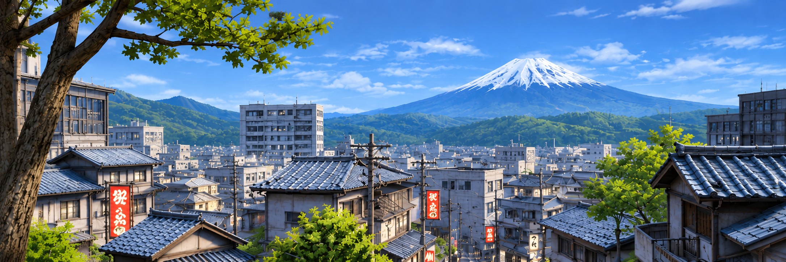
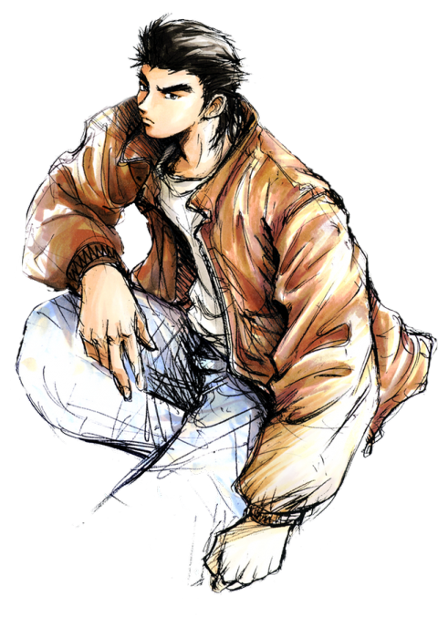
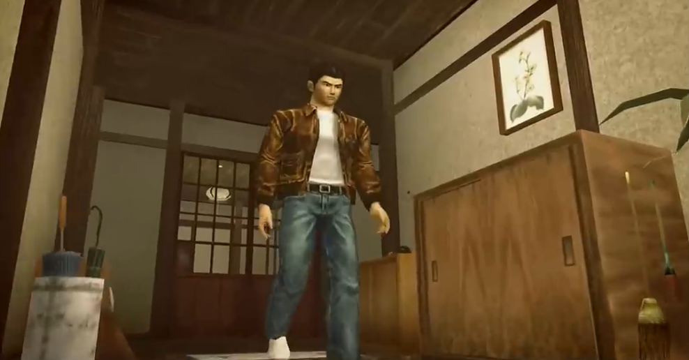
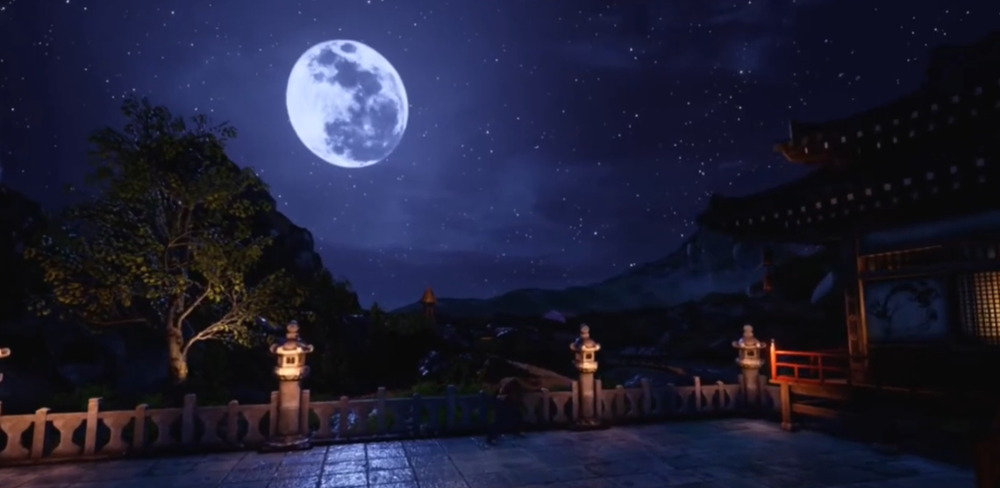
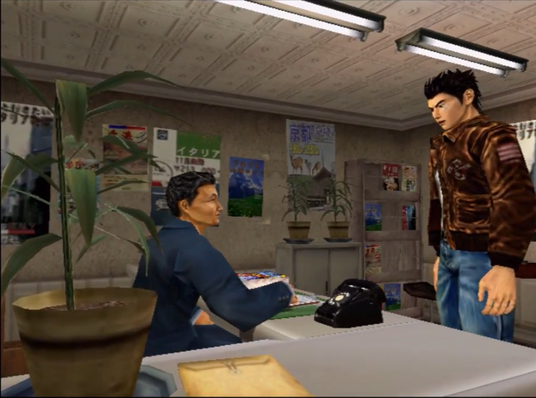
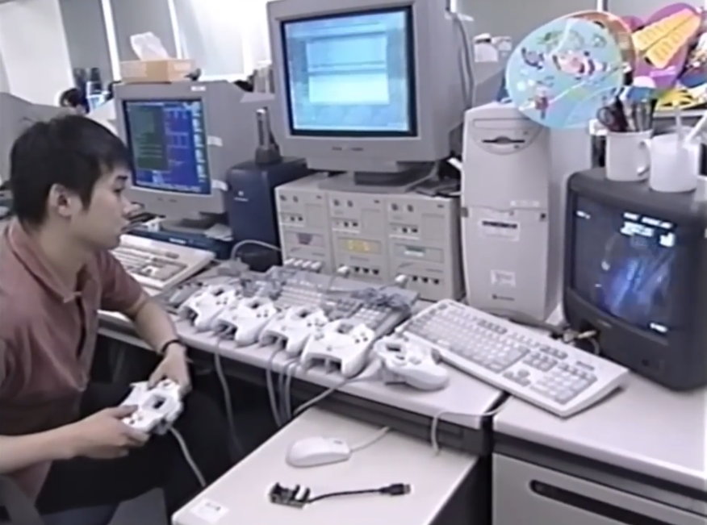

The Game

The Concept
The game combines RPG, open-world, mini-games, and everyday life experiences.
The World
Shenmue introduced a detailed world where players could explore their surroundings, examine objects, and interact with the environment.


The Weather
Suzuki wanted to feature a day-and-night cycle and changing weather conditions that would help to create a realistic atmosphere.
The Routine
Residents followed daily routines, and players could speak with characters to gather information.


The Code
Shenmue's detailed environments and gameplay required complex programming. One example is collision detection, which helps determine how characters interact with walls, objects, and other parts of the environment.
You can view a reconstruction of parts of the game's software using C++.